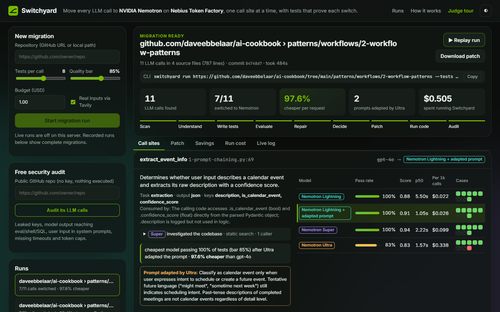
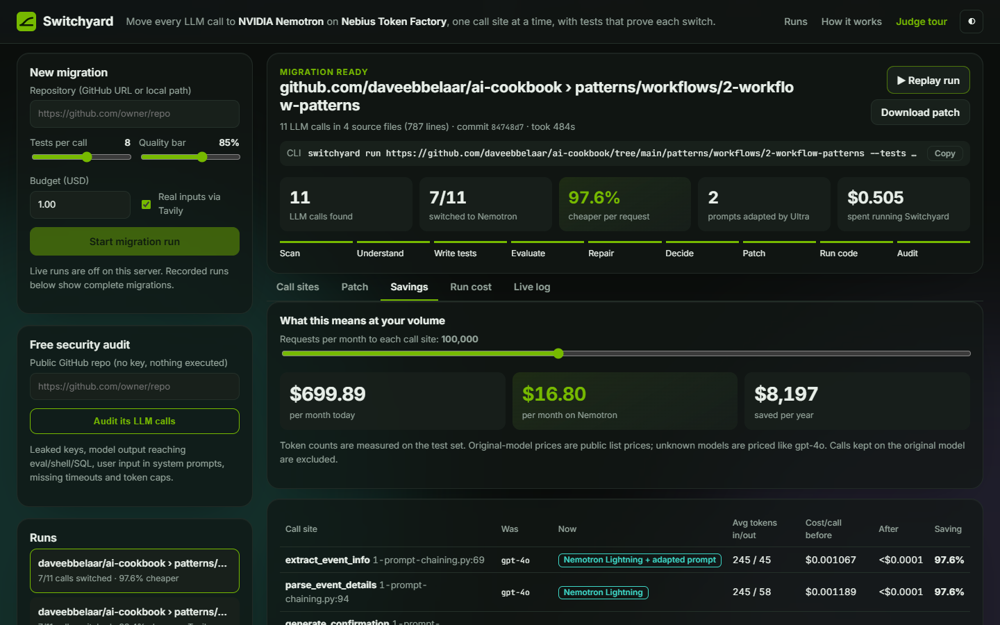
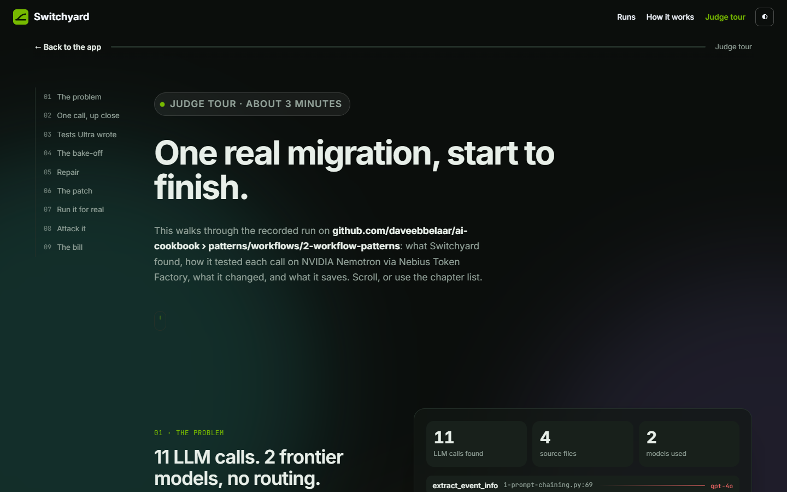

You can't prove a cheaper model is as good, so you don't risk it.
Swap the model and the JSON shape, the labels and the edge cases break.
Every call × every model × every edge case, then the code changes.
Static analysis, nothing executed. Python and JS/TS: OpenAI, Anthropic, LiteLLM, LangChain, Vercel AI SDK.
def route_calendar_request(user_input): completion = client.beta.chat.completions.parse( model=model, # "gpt-4o" messages=[...], response_format=CalendarRequestType, )
Nemotron 3 Super agent with read-only tools finds who calls it, with what inputs, and which fields drive the app's logic.
Nemotron 3 Ultra with reasoning on writes typical and tricky cases with ideal answers. Tavily brings real-world inputs.
Every Nemotron tier answers every test. Checks in code (JSON, schema, labels, fields), plus a Nemotron grader. Here: check_security.
Lightning almost passed validate_calendar_request. Ultra adapted the prompt and Lightning was tested again.
Exact edits, every file re-parsed and compiled. Each call's model sits behind an env var, so rollback is one line.
- completion = client.beta.chat.completions.parse( - model=model, + completion = _token_factory.beta.chat.completions.parse( + model=os.environ.get("LLM_MODEL_ROUTE_CALENDAR_REQUEST", + "nvidia/Nemotron-3_5-Lightning"), response_format=CalendarRequestType,
Each switched function is called once against Token Factory and every HTTP request is recorded. If it needs a Pydantic object, Nemotron writes the call and fixes it from the traceback.
$ python -c "route_calendar_request('lunch with Sam friday')" POST api.tokenfactory.us-central1.nebius.com/v1/chat/completions model=nvidia/Nemotron-3_5-Lightning 200 OK ✓ verified returned CalendarRequestType(request_type='new_event')
Injection, prompt-leak and exfiltration probes on the new model, plus static checks for leaked keys and model output reaching eval, shell or SQL. Fixes are re-tested.


